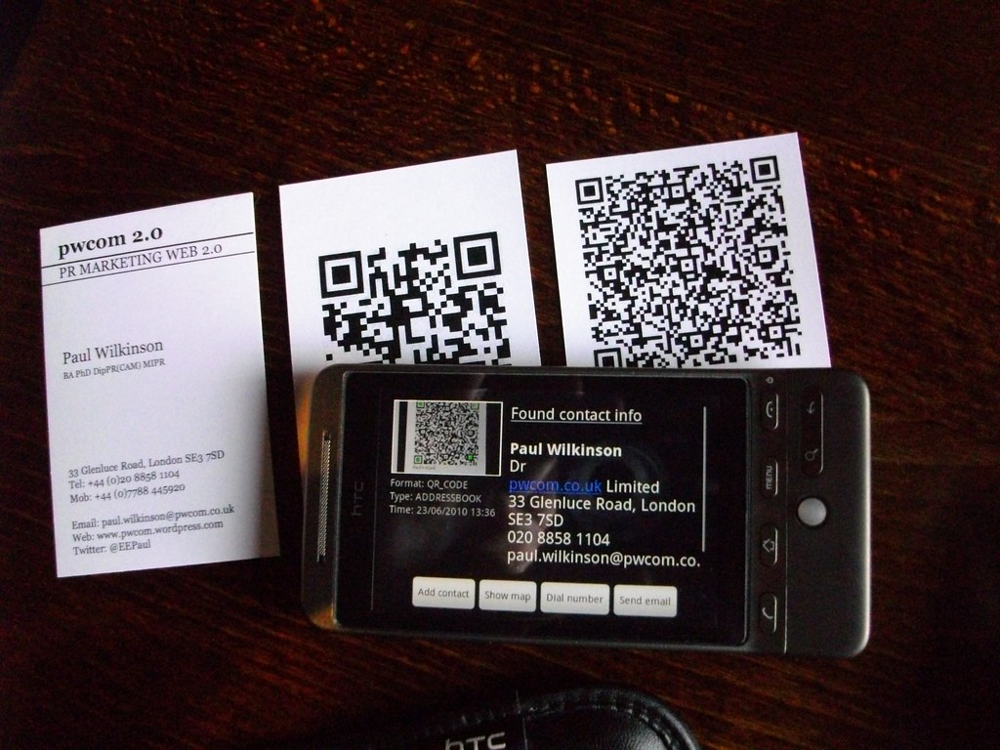

Search for an Australian Open Banking CDR API developer India and the results all look experienced. The difference shows up when someone asks how consent gets revoked at 2am, or what happens when a conformance assessor finds a gap in your security evidence.
Viantha Solutions builds API integrations for fintechs, lenders and digital banks from Tiruchirappalli (Trichy) in Tamil Nadu, with our headquarters in Singapore. Here is how the CDR regime behaves in practice, what an offshore team can honestly commit to on the APRA side, and how the hours line up.
The same applies to an eKYC identity verification API AU onboarding flow: document capture, consent and the audit trail decide whether an application completes, long before the score does.
Key Takeaways
- CDR is a consent and accreditation regime, not just an API specification. Accreditation plus conformance takes months: run both in parallel with the build.
- APRA supervises your institution, not your vendor. You need offshore evidence: environment separation, access logs, clean test data.
- NPP and PayID are real-time rails. Idempotency, proxy lookups and exception handling are where payment projects slip.
- Our morning is your afternoon. A fixed daily overlap slot works without anyone taking 6am calls.
In This Guide
What Australian Fintechs Actually Hand to an Offshore Team
The work that travels well has edges: an API contract, a consent model, defined failure states, and test cases that pass or fail without interpretation. Three categories dominate.
CDR consent and data sharing
Any CDR Consumer Data Right API integration starts with consent objects rather than endpoints: creating consent, extending it, handling withdrawal, sending consent receipts, keeping the audit trail the rules require. Then the data itself, with standardised product and transaction schemas, fan-out calls across data holders and caching rules that exist to protect bank infrastructure. The fiddliness is where an offshore team proves its worth.
Payments and identity
Onboarding means AUSTRAC-mandated checks under the AML/CTF regime alongside the usual document and liveness vendors, which is where our API integration team does most of its Australian work. Payment flows sit on the NPP rather than card rails, and a failed payment nobody reconciled becomes a support ticket within minutes.
Backend services for digital banks
An Australian neobank backend developer request usually means customer, account and ledger services plus the integration layer around a core banking vendor. The neobank wave of 2019 proved the architecture works and the business model harder: 86 400 ended up inside BOQ, while Up and ING's direct offering keep running their own digital stacks. The pattern is standard now, and our team has built against it.
CDR in Practice: Consent, Accreditation and Conformance
The Consumer Data Right is Australia's open banking and data-sharing regime. Treasury sets the rules, the ACCC administers accreditation through the CDR Registrar, and an external conformance assessor tests your implementation against the data standards. Banks act as data holders; accredited data recipients pull data with consumer consent.
Two honest observations. Accreditation and conformance assessment take longer than any pitch deck suggests: evidence packs, security testing, legal review, then remediation if a finding comes back. The standards also move, so a vendor who learned the rules once in 2021 is reading stale material.
Some teams looking for an OBIE Australia API integration India provider get tripped by the acronym. OBIE is the United Kingdom's entity behind Open Banking UK, and no Australian body carries that name. Teams that learned on the UK's OBIE standard usually find Australia's CDR familiar in spirit and stricter in the detail, where consent receipts and cancellation handling carry more weight than a specification document alone.
How we sequence it: sandbox work starts immediately, accreditation paperwork runs in parallel, and no production data touches a development environment. That last rule is not negotiable, and it is what your APRA compliance software developer India engagement gets audited on later.
APRA and What a Vendor Can Honestly Promise
APRA is the prudential regulator for banks, insurers and superannuation. Its information security standard CPS 234 and operational risk standard CPS 230 set expectations that flow down through your contracts to anyone touching your systems. APRA does not supervise your software vendor, and any vendor who claims otherwise is not being straight.
What we can commit to is boring and checkable: we work inside your access controls, personal data stays out of development environments, sub-processors are disclosed before use, and we hand over logs when your risk team asks. The wider security posture sits with your institution, supported by evidence from our side rather than replaced by it. See how we frame this for banks on our banking technology page.
One thing nobody budgets for: vendor security reviews. Questionnaires, penetration test evidence, findings, then a second round from a different team. Three to five weeks is ordinary for an Australian financial services client, and it sits on the critical path if you leave it until after the pilot is approved.
NPP, PayID and Building on Australian Rails
The New Payments Platform is Australia's real-time payments infrastructure, and PayID is the proxy addressing layer that lets a phone number or email stand in for a BSB and account number. A capable NPP PayID API developer India team should be able to discuss the clearing and settlement model, and the difference between a real-time payment and a batch file, before you explain your product.
The engineering realities are unglamorous. PayID lookups return details a user must confirm, so the flow has to handle a mismatch without confusing anyone. Payments settle fast, which means reconciliation runs continuously rather than overnight. Addressable targets arrive as new message types, and an endpoint assuming one shape breaks the first time the rail evolves. None of it is hard to learn; learning it while shipping is.

Why Australian Teams Build in India
Cost is why an Australia fintech API outsource India conversation starts. Retention is why it continues. Our engineers work from Trichy, where churn runs far below Bangalore or Hyderabad, so the person who mapped your CDR schemas in month one is still there when the conformance assessor comes back in month eight.
Hours work better than most people assume. Australia runs 4.5 hours ahead of India during standard time and 5.5 during daylight saving, so our working morning lands in your Sydney or Melbourne afternoon. A 10:30 IST standup is 3pm in Sydney through most of the year and 4pm when the clocks move. We agree that slot in writing and keep decisions inside it.
Language is rarely the issue with Australian clients; English is the working language on both sides of the call. Documentation discipline is the differentiator, and a scope note with assumptions listed outperforms a polished deck.
Engagement, Hours and Questions Worth Asking First
A paid pilot comes before any long-term commitment: a discovery week that produces a written scope, a two to four week pilot on one integration, then a dedicated team if the evidence supports it.
Four questions that separate a real vendor from a convincing profile:
- "Walk me through a CDR consent that gets revoked mid-session." If the answer skips cancellation handling, they have read the standard rather than built against it.
- "Which conformance findings have you remediated?" Specific findings are credible. A claim of zero issues means nobody has been through an assessment.
- "What breaks when a PayID lookup returns a name that does not match?" You want a described user flow, not a shrug.
- "Can we start with a two to four week paid pilot?" Refusal tells you where the incentives sit.
If you would rather skip the questionnaire and show us the system, send the outline and an engineer will reply, most likely within your afternoon.
FAQs Australian Clients Ask Us
Are you a CDR Open Banking API developer from India for Australian clients?
Yes, from Trichy in Tamil Nadu with headquarters in Singapore: CDR consent and data holder connections, accredited data recipient services, NPP and PayID flows and neobank backend services on Spring Boot, React and AWS.
How long does CDR accreditation take before we can build?
Accreditation through the CDR Registrar plus conformance assessment is a multi-month process: evidence, security testing, legal review and remediation. We start sandbox engineering immediately, so the build keeps moving while accreditation is in flight.
Can you build an Australian neobank backend and integrate NPP payments?
Yes. Customer, account and ledger services, integration around your core banking vendor, NPP flows and PayID proxy lookups with the exception handling real-time payments demand. If you would rather staff individual engineers, our IT staffing practice places developers with banking experience.
How do time zones work for an Australian engagement?
Our morning maps onto your afternoon. A 10:30 IST standup is 3:00 pm in Sydney during standard time and 4:00 pm during daylight saving, and the overlap window goes into the engagement note at the start.
Talk to an Engineer, Not a Sales Rep
Describe the integration you need and the system it has to fit into. we will tell you honestly what it takes and whether we are the right team for it.
Start a Conversation Explore Services